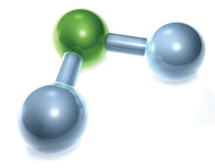
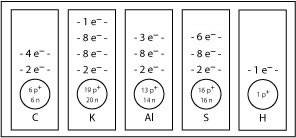
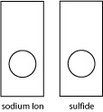
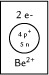
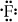
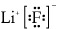
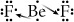
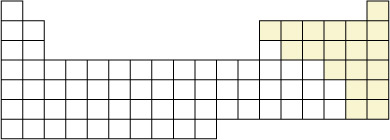
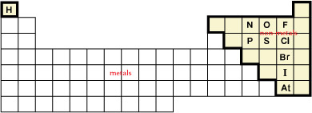
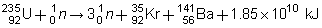

Unit A Introduction

© 2007 Jupiterimages Corporation
Concepts, models, and theories are often used to interpret and explain observations and to predict future observations. This unit relates theories about bonding to the properties of matter and develops explanations and descriptions of structure and bonding through scientific models. You will learn about the diversity of matter by investigating ionic and molecular substances.

© Spectral-Design/shutterstock
This unit builds on concepts of matter, energy, and chemical change discussed in previous science courses. You will use graphing and measuring techniques learned in previous math courses as well. This unit will prepare you for several units in Chemistry 30, including thermochemical and electrochemical changes, and for when you begin to study organic chemistry.
The major outcomes for this unit are for you to be able to
-
describe the role of modelling, evidence, and theory when explaining the structure, bonding, and properties of ionic compounds
- describe the role of modelling, evidence, and theory when explaining the structure, bonding, and properties of molecular substances
The overarching questions in this unit are
-
What is the role of modelling, evidence, and theory in explaining and understanding the structure and properties of molecular substances?
-
What is the role of modelling, evidence, and theory in explaining and understanding the structure and properties of ionic compounds?
-
Why do different substances have different melting and boiling points in addition to differences in other physical properties?
The major concepts developed in this unit are
-
the use of science and technology in society
-
the structure and properties of elements and ions
-
the structure and properties of ionic compounds and molecular compounds
-
chemical change and its relationship to the kinetic molecular theory
-
bonding theory and Lewis formulas
-
molecular shapes and VSEPR theory
-
molecular polarity and intermolecular forces
Module Descriptions
Module 1—Chemical Foundations

© keellla/shutterstock
Module 1 will examine fundamental science and chemistry concepts.
The essential question that you will look at in this module is this:
Module 2—Chemical Compounds

© Graca Victoria/shutterstock
In this module you will learn about chemical compounds and the forces within and between them. You will learn about other types of chemical bonds and the effect they have on the properties of some substances, and how these properties are used to develop technologies that you might be using, but did not know it.
The essential question that you will look at in this module is this:
- How are models, empirical evidence, and theories used to explain and understand the structure and properties of molecular substances?
Module 1—Chemical Foundations
Module Introduction
element: a pure substance that cannot be broken down into simpler chemical substances by any physical or chemical means; consists of only one kind of atom
ion: an entity with a net positive or net negative electrical charge due to the loss or gain of one or more electrons
ionic compound: a pure substance formed from the bond between a metal and a non-metal
molecular compound: a pure substance formed by covalently bonded non-metal atoms
kinetic molecular theory: the idea that the smallest entities of a substance—atoms, ions, or molecules—are in continuous motion, colliding with each other and objects in their path
Throughout Module 1 you will be examining fundamental science and chemistry concepts. You will examine
The question addressed in Module 1 is as follows:
What are the roles of modelling, evidence, and theory when explaining and understanding the structure, bonding, and properties of ionic and molecular compounds?

© 2007 Jupiterimages Corporation
 Big Picture
Big Picture
What do you know about nuclear technology? Is there more to nuclear technology than bombs? Have you or someone you know ever had an X-ray, ultrasound, CT scan, or MRI? Have you ever heard of “The Manhattan Project,” the “Trinity Test,” or the “Cuban Missile Crisis”? What about the use of nuclear weapons during World War II or the incidents at Three Mile Island and Chernobyl? Do you, your family, or your community have an opinion about nuclear technology? Do you know anyone who has been directly affected by nuclear technology? If so, was the experience positive or negative?
technology: the skills, processes, and equipment required to manufacture useful products or to perform useful tasks
Use the interactive timeline to view some important events in the history of nuclear technology.

Copyright © 2005 Ontario Power Generation Inc., all rights reserved. This information is subject to the general terms of use set out in Ontario Power Generation Inc.’s web site (www.opg.com).
The history of nuclear power in Canada begins in the 1940s with the development of the ZEEP (Zero Energy Experimental Pile) reactor. On September 5, 1945, ZEEP became the first active nuclear reactor outside of the United States. Its purpose was to allow scientists to carry out nuclear experiments and to test the viability of nuclear power. Canada’s experimentation with the ZEEP reactor led to the development of the CANDU (CANada Deuterium Uranium) reactor in the 1960s. In 2006, there were approximately 37 active CANDU reactors in countries around the world, including Canada, South Korea, China, India, Argentina, Romania, and Pakistan.
In This Module
Lesson 1 —Elements and Ions
This lesson will review the structure and function of the periodic table. You'll study atomic structure and the relationship among protons, neutrons, and electrons. You will then learn how atoms become ions and study how they form charged particles due to an imbalance of protons and electrons.
Lesson 2 —Ionic Compounds
This lesson will focus on ionic compounds, such as table salt (sodium chloride). Naming and writing formulas for ionic compounds is of critical importance in this lesson. You will examine the process of forming ionic compounds involving binary compounds, multi-valent metals, polyatomic ions, and hydrates. You will learn that ionic compounds are solids at room temperature and, if they are soluble in water, form conducting solutions. You will also study electronegativity and how it affects the formation of a chemical bond through the competition for bonding electrons.
Lesson 3 —Molecular Elements and Compounds
The focus in this lesson is on molecular elements and compounds, like sugar. They can be found in any state at standard conditions and, unlike ionic compounds, if they are soluble in water, they do not form conducting solutions. You will learn how to name formulas for molecular elements and compounds using the prefix system. You will study how they form as a result of two or more atoms sharing electrons. You will explore how the difference in electronegativity between two atoms helps identify the bond between the atoms.
Lesson 4 —The Particle Model
This lesson compares and contrasts physical changes, chemical changes, and nuclear changes by examining the changes that occur to the particles involved.
-
What is the particle model of matter?
-
What is the kinetic molecular theory?
-
What are the types of changes in matter, and what evidence is there that a chemical change has occurred?
 Module Assessment
Module Assessment
The assessment in this module consists of four (4) assignments, one for each lesson.
Lesson 1 —Elements and Ions
 Get Focused
Get Focused
Earth’s crust is composed mainly of oxygen. The oxygen found in the crust is not in gaseous form as it is in the atmosphere. Instead, oxygen is a component found in solid compounds, such as rocks and minerals. Oxygen, like many elements, can exist in different forms. How does the structure of atoms differ when atoms of the same element have different forms? In this lesson you will review and extend your understanding of models of the atom and look at how these models are used to explain the different forms in which matter can exist. You will also see how these models relate to the availability of uranium, which is the energy source for nuclear reactors.

© 2007 Jupiterimages Corporation
|
Components of Earth’s Crust
|
| oxygen |
45.2% |
| silicon |
27.2% |
| aluminium |
8.0% |
| iron |
5.8% |
| calcium |
5.1% |
| magnesium |
2.8% |
| sodium |
2.3% |
| potassium |
1.7% |
| other elements |
1.9% |
Essential Questions
Module 1: Lesson 1 Assignment
You will complete the Module 1 Lesson 1 Assignment at the end of the lesson.
Remember that the questions that are not marked by the teacher provide you with the practice and feedback that you need to successfully complete this course. You should respond to all the questions and place those answers in your course folder.
 Explore
Explore
atomic number: the characteristic number of protons in the nucleus of an atom of a particular element
The organization of data into patterns or common characteristics helps scientists understand the material they are studying. In dealing with matter, elements are classified according to their atomic numbers. The atomic number indicates the number of protons (positively charged particles) found within the atom. Along with the atomic number, the elements are also categorized according to how they react. The result of this classification is the Periodic Table of the Elements.
The first periodic table was published in 1869 by Russian scientist Dmitri Mendeleev. He listed the data for the known elements—there were approximately 60 elements at that time—on file cards and set about arranging them in patterns. He left spaces in his arrangement for elements he believed were yet to be discovered. Because of the patterns within the periodic table, he was even able to predict the properties of these undiscovered elements. This held true as new elements were discovered and placed in the table.
group: a set of elements with similar chemical properties; the elements in a vertical column in the main part of the periodic table; also called a family
family: see group
period: a horizontal row of elements in the periodic table whose properties gradually change from metallic to non-metallic from left to right along the row
The elements within the table are positioned according to group (or family) and period. Groups correspond to the vertical columns on the periodic table and are labelled from 1 to 18 across the top of the table. Periods denote the horizontal rows on the periodic table. There are seven periods on the table.
 Read
Read
Read pages 14 to 16 in the textbook to review the organization of the periodic table.
A version of the periodic table is also available in the Chemistry Databook. You will often use this version of the table as you work through this course and Chemistry 30.
Many versions of the periodic table are available on the Internet. Use the search terms “periodic table” and “interactive” to find versions that may even allow you to hear the pronounciation of element names.
As you work through this course you will use many values shown in the cells within the periodic table. In many cases, the values listed identify properties of each element and were used by Mendeleev and other scientists to construct and refine the position of elements on the periodic table.
Self-Check
SC 1. Use this tutorial to check your understanding of the information contained on the periodic table.
Read
proton: a positively charged subatomic particle found in the nucleus
neutral: having neither acidic nor basic properties; having a net charge of zero (electrically neutral)
neutron: an uncharged subatomic particle present in the nuclei of most atoms
electron: a small, negatively charged subatomic particle; has a specific energy within an atom
From your work in previous science courses you have learned that the atom has a dense nucleus that contains positively charged particles called protons and neutral particles called neutrons. The nucleus is orbited by negatively charged particles called electrons.
Read pages 18 to the summary on page 23 to further review the atom’s structure and scientific work that led to the current understanding of the structure.
Work through “SAMPLE problem 1.1” and the “Communication example” on page 22 of the textbook to review drawing atoms using a representation consistent with Bohr’s theory.
Self-Check
SC 2. How many protons, neutrons, and electrons are found in the most common isotope of calcium?
SC 3. What would a magnesium atom look like? Find magnesium on the periodic table, and sketch its energy-level diagram.
SC 4. Use the periodic table and the diagram for magnesium as references to complete the following energy-level diagrams.
![A drawing contains five rectangles. Each rectangle is positioned so that its longer side runs vertically. In the lower third of each rectangle is a circle. Below each circle is a symbol for an element. The upper two-thirds of each rectangle is empty. The first rectangle on the left has the symbol upper case C. The second rectangle has the symbol upper case K. The third rectangle has the symbol upper case A and lower case L. The fourth rectangle has the symbol upper case S. The fifth rectangle has the symbol upper case H.](../../images/m1/017_chart.jpg)
Self-Check Answers
SC 2. Calcium has an atomic number of 20. This means there are 20 protons in the nucleus and 20 electrons orbiting around the nucleus. The atomic mass is 40.08. To determine the number of neutrons in the nucleus, simply subtract the atomic number from the atomic mass to get a value of 20 neutrons.
SC 3. With an atomic number of 12, there will be 12 protons in the nucleus and 12 electrons orbiting the nucleus. The atomic mass is 24.31, so there are 12 neutrons in the nucleus. Because magnesium has 12 electrons, 2 electrons appear in the first orbital, 8 electrons appear in the second orbital, and the remaining 2 electrons appear in the third orbital.
![A diagram shows a black sphere surrounded by three circles. Below the diagram is the upper case letter M, followed by the lower case letter g. Inside the black sphere is the text 12 p followed by a plus sign, and 12 n. The first circle surrounding the sphere has two small red spheres located at opposite sides of the circle. The second circle is larger than the first one and has 8 small red spheres equally spaced around the circle. The third circle is larger than the second circle and has 2 small red spheres located at opposite sides of the circle.](../../images/m1/008_atomic.gif)
SC 4.

Ions
Current theories about the atom’s structure suggest that atoms have higher stability when their energy levels are filled to capacity with electrons.
Consider the noble gases. These elements are found in Group 18 on the periodic table and are known for their tendencies to be unreactive. As the theories you have studied to this point suggest, all noble gases have completely filled energy levels. For example, neon—which has 10 electrons surrounding the nucleus—has 2 electrons in the first orbital and 8 electrons in the second orbital. Both orbitals are completely filled. Because they are filled, neon is a stable gas and is very unreactive.
noble gas: elements listed in column 18 of the periodic table that share the property of very limited chemical reactivity
 Discuss
Discuss
Read “Formation of Monatomic Ions” on pages 23 and 24 of the textbook. After you have completed your reading, comment on the validity of the following statement:
“Atoms will gain or lose electrons to have an electron configuration like that of the nearest noble gas. When atoms gain or lose electrons, they become charged particles called ions. Energy level diagrams for ions can be drawn in a similar way as energy level diagrams for atoms. The difference is in showing a positive or negative charge on the ion.”
Share your comment with your classmates or some other people.
 Watch and Listen
Watch and Listen
You may wish to follow this Watch and Listen link to view the animation that reviews the formation of ions in a more in-depth manner. You may wish to try these Self-Check questions. Depending on your success, come back to this link before completing the other Self-Check questions.
Another explanation for the formation of ions appears in the “Audio Walkthroughs” section of Lesson 1.4 on the textbook’s website. If you do not already have access to this site, here is your username and password.
Username: nelsonchem_student
Password: nelsonchem_onlinelearning
Self-Check
SC 5. Draw the arrangement of protons, neutrons, and electrons for the phosphide ion.
SC 6. Draw the arrangement of protons, neutrons, and electrons for the beryllium ion.
SC 7. Draw the arrangement of protons, neutrons, and electrons for diagrams for the following ions.

Self-Check Answers
SC 5. Draw the phosphide ion. The phosphorus atom has 15 protons and 16 neutrons. In a phosphorus atom, the electrons are placed into three energy levels with 2, 8, and 8 electrons, respectively, from the innermost energy level to the outermost level. The phosphorus atom will gain 3 electrons to fill its valence orbital and become the phosphide ion. With this gain of electrons, the atom is no longer neutral; it now has 3 extra negative charges. This charge is included with the symbol as shown.

SC 6. The beryllium atom has 4 protons and 5 neutrons. It has 4 electrons placed in a 2-2 configuration. The beryllium atom will lose 2 valence electrons to become a beryllium ion. With this loss of electrons, the beryllium atom now has 2 extra protons compared to electrons. This shows up as a 2+ charge on the ion. Its electron configuration is now like helium, the nearest noble gas.

SC 7.

 Reflect on the Big Picture
Reflect on the Big Picture
© 2007 Jupiterimages Corporation
The application of nuclear technology requires detailed knowledge about atoms and their structure. You may wish to research the following questions.
-
In what form is uranium found naturally?
- How must uranium be processed to create a “nuclear fuel” for the CANDU reactor?
- What isotopes of uranium exist?
-
What isotope of uranium is used in the CANDU process?
-
What is a half-life?
-
What is the half-life of the isotope of uranium used in a CANDU reactor?
-
What isotopes are produced as waste from a CANDU nuclear reactor?
-
How is waste material from a CANDU reactor stored and disposed?
Module 1: Lesson 1 Assignment
Complete the Module 1 Lesson 1 Assignment according to the pathway you choose.
 Going Beyond
Going Beyond
Canadian Contribution

Courtesy of Stanford University
Richard Taylor was born in Medicine Hat, Alberta, in 1929. He attended the University of Alberta. Taylor was involved in the production of the Stanford Linear Accelerator Center in California. While working with two other scientists from the Massachusetts Institute of Technology (MIT), Taylor used the accelerator to dispel the belief that protons and neutrons were indivisible. His experiments in the late 1960s and early 1970s showed extremely small particles moving within protons and neutrons. These new particles were called quarks. In 1990, Richard Taylor was jointly awarded the Nobel Prize in Physics for his findings.
More information about Dr. Taylor’s work is located in “Did You Know?” on page 23 of the textbook and in the “Weblinks” for Section 1.4 on the textbook website.
 Lesson Summary
Lesson Summary
Reflect on the critical questions from the beginning of this lesson:
-
Do you remember how to identify elements and ions?
-
How does scientific knowledge develop through hypothesizing, investigating, and collecting evidence?
-
How do the observations and experimental work of many individuals lead to modern understandings of matter?
-
Do theories develop as a result of many scientists sharing ideas?
-
What role does evidence have in the development of the atomic model?
-
Why is it important to have a questioning attitude and a desire to understand more about matter?
-
How have Canadians contributed to nuclear research?
In this lesson you reviewed the structure and function of the periodic table. You also reviewed basic atomic structure and the importance of protons, neutrons, and electrons in that structure. You extended your atomic knowledge and applied it to ions as well, understanding that they are charged particles due to an imbalance of protons and electrons. This lesson also illustrated how the observations and experimental work of many individuals led to the current understanding of the atom. This work has also allowed for the development of a process to use the energy from a nuclear change.
Lesson Glossary
electron: a small, negatively charged subatomic particle; has a specific energy within an atom
energy level: a specific energy an electron can have in an atom or ion
family: see group
group: a set of elements with similar chemical properties; the elements in a vertical column in the main part of the periodic table; also called a family
neutral: having neither acidic nor basic properties; having a net charge of zero (electrically neutral)
neutron: an uncharged subatomic particle present in the nuclei of most atoms
noble gas: elements listed in column 18 of the periodic table that demonstrate limited chemical reactivity
period: a horizontal row of elements in the periodic table whose properties gradually change from metallic to non-metallic from left to right along the row
proton: a positively charged subatomic particle found in the nucleus.
Lesson 2 —Ionic Compounds
Get Focused
© Courtesy Cameco Corporation www.cameco.com/media_gateway/photos
Canada is one of the world’s largest producers of uranium. Unfortunately, uranium does not naturally occur in a form usable in CANDU nuclear reactors, so it must be processed. In Lesson 1 you learned that many metals exist naturally in their ionic form and are often combined with non-metallic elements like oxygen. The mining and processing of uranium is a complex industry occurring in Canada and other locations in the world. Processing involves the conversion of uranium into other compounds that allows uranium to perform as a nuclear fuel.
In this lesson you will investigate questions about the structure and properties of ionic compounds, and you will relate these properties to considerations about uranium and the effect that processing uranium could have on the environment.
Essential Questions
ionic bond: the simultaneous attraction among positive and negative ions
intramolecular force: the relatively strong bonds or forces of attraction and repulsion within a molecule; typically covalent bonds
electronegativity: a value that describes the relative ability of an atom to attract a pair of electrons
- Can you recall the principles from Science 10 for assigning names to ionic compounds?
Module 1: Lesson 2 Assignment
You will complete the Module 1 Lesson 2 Assignment at the end of the lesson.
Remember that the questions that are not marked by the teacher provide you with the practice and feedback that you need to successfully complete this course. You should respond to all the questions and place those answers in your course folder.
Explore
Watch and Listen
This video will introduce you to an ionic compound called sodium chloride—the chemical name for table salt—and introduce the chemical components of sodium and chlorine. Use this video to review the general properties of ionic compounds.
Ionic compounds are formed when a metallic element combines with a non-metallic element (e.g., NaCl).
View this video about the formation of NaCl. You may wish to “pause” the video and draw the representations of the sodium and chlorine atoms before they react and after they react. What happens, with respect to the arrangement of electrons around these two atoms, when the compound sodium chloride is made? Is this change consistent with what you learned in the previous lesson?
Read
Ionic compounds are formed when electrons are transferred from a metal to a non-metal. As you saw in the most recent video, an ionic compound forms when the metal will lose electrons to have filled energy levels. Also, the non-metal will gain electrons to have filled energy levels. The transfer of electrons between metals and non-metals produces positively and negatively charged particles (ions) that attract each other to form an ionic bond.
An ionic bond is the result of an intramolecular force caused by the attraction of oppositely charged particles. You will examine four different types of ionic compounds:
-
binary ionic compounds
-
multi-valent metals
-
polyatomic ions
-
ionic hydrates
binary ionic compound: a compound that contains only two kinds of monatomic ions
multi-valent: the ability of an atom to exist as ions with different charges
polyatomic ion: a combination of two or more atoms that has a net positive or negative charge
hydrate: a substance containing loosely bonded water molecules
Binary Ionic Compounds
monatomic ion: a positively or negatively charged particle formed from a single atom by the loss or gain of electrons; also known as a simple ion
Read “Binary Compounds” on page 29 of the textbook. Binary ionic compounds are composed of two kinds of monatomic ions. They are the simplest type of ionic compounds. The compounds are named by writing the name of the metal as it appears on the periodic table, followed by the name of the non-metal with the ending -ide.
Examples
NaCl |
sodium chloride |
K2O |
potassium oxide |
BaF2 |
barium fluoride |
CaCl2 |
calcium chloride |
AlBr3 |
aluminium bromide |
LiH |
lithium hydride |
Take a look at lithium fluoride by using a simplified diagram showing only electrons in the outermost energy level of each atom involved.
Lithium has one valence
electron to give away.

|
Fluorine has room for one more valence electron.
 |
Lithium will give away the valence electron to the fluorine atom.

|
The lithium ion is now held to the fluoride ion through an ionic bond.
 |
The formula of an ionic compound must have a net charge of zero. The positive charge of a lithium ion combined with the equal and opposite charge of a fluorine atom results in an electrically neutral compound.
Now take a look at beryllium fluoride.
You can see from the periodic table that the beryllium ion has a charge of 2+.
Beryllium has two valence electrons to give away.

|
Fluorine has room for one more valence electron.

|
A fluoride ion has a charge of 1−. With a 1:1 ratio, you have Be2+ and F−.
(2+) + (1−) = 1+
This is no good. This compound is not stable because it doesn't have a net electrical charge of zero. How do you fix this? You need to have two fluoride ions to obtain an overall charge of zero.
Since beryllium has two electrons to give away, two fluorine atoms are required to accept each electron.
 |
There are now two fluoride ions held to the beryllium ion through ionic bonds.

|
BeF2 has a net charge of zero. The beryllium ion has a charge of 2+, and the two fluoride ions each have a charge of 1−. The end result is that the entire compound is electrically neutral.
chemical formula: a series of symbols representing the atoms/ions, and their proportions, present in a pure substance
There is a quicker way to write chemical formulas from the name. This involves writing the symbols of the ions first, and then simply swapping their superscripts and writing them as subscripts.
Example
Using the example of barium phosphide, write the two ions and include their charges.
Write the two ions and include their charges.
Ba2+ P3−
Now, simply swap the superscripts and write them as subscripts. The formula now becomes Ba3P2.
Self-Check
SC 1. Complete each statement by providing the correct chemical name or chemical formula.
-
MgBr2 is ____________________.
-
Al2S3 is ____________________.
-
The formula for beryllium nitride is ____________________.
-
The formula for potassium phosphide is ____________________.
-
CaO is the formula for ____________________.
Self-Check Answer
SC 2. Calcium has an atomic number of 20. This means there are 20 protons in the nucleus and 20 electrons orbiting around the nucleus. The atomic mass is 40.08. To determine the number of neutrons in the nucleus, simply subtract the atomic number from the atomic mass to get a value of 20 neutrons.
SC 3. With an atomic number of 12, there will be 12 protons in the nucleus and 12 electrons orbiting the nucleus. The atomic mass is 24.31, so there are 12 neutrons in the nucleus. Because magnesium has 12 electrons, 2 electrons appear in the first orbital, 8 electrons appear in the second orbital, and the remaining 2 electrons appear in the third orbital.
SC 4.
Multi-Valent Metals
Read
The refining of uranium involves a variety of uranium compounds including U3O8, UO3, and UO2. How are these different oxides of uranium identified using names? Read “Multi-Valent Metals” on pages 29 and 30 of your textbook.
Multi-valent metals have more than one charge due to different electron configurations. When naming a compound containing one of these metals, you must indicate which charge (or form) is involved. The charge of the metallic ion is denoted using Roman numerals. The Roman numerals for numbers 1 to 7 are shown.
1 – I
2 – II
3 – III
4 – IV
5 – V
6 – VI
7 – VII
Ionic compounds containing multi-valent metals are named in the same way as binary ionic compounds, with the addition of a Roman numeral. After you write the name of the metal, you must indicate its charge using the appropriate Roman numeral in brackets. The name of the non-metal ion follows, and the ion still uses the ending -ide.
Example
Determine the name of MnO2.
First, you need to determine the charge of the Mn ion (either 2+ or 4+). To figure out the charge on the multi-valent metal ion, use the charge and subscript of the non-metal ion. Recall that all ionic compounds have a net charge of zero.
Ions |
Mn |
O |
Charge |
? |
2− |
Subscript (Number of Each Ion in Formula) |
1 |
1 |
Totals of Each Charge
(Positive Must Equal Negative Charges) |
−2 = 1 × (?)
? = +2
|
1 x (−2) = −2 |
The charge on the Mn ion in MnO is +2, and the name for the compound is manganese(II) oxide.
Is the name of the other oxide of manganese, MnO2, manganese(IV) oxide?
You can determine the formula of an ionic compound containing a multi-valent metal in the same way you determined the formula for a binary ionic compound. Just remember that the Roman numeral indicates the charge on the multi-valent metal.
mercury(I) oxide
Hg+ O2− gives Hg2O. |
mercury(II) oxide
Hg2+ O2− gives HgO. |
tin(II) chloride
Sn2+ Cl− gives SnCl2. |
tin(IV) chloride
Sn4+ Cl− gives SnCl4. |
Note that the more common form of a multi-valent metal is listed first on the periodic table (either the higher or the farthest left of the two charges given in the box on the periodic table). For example, Fe3+ is more common than Fe2+. If the ion of a multi-valent metal is not specified in the description or in a question, you can assume Fe3+ is the most common ion.
Self-Check
SC 2. Complete each statement by providing the correct chemical name or chemical formula.
-
CuO is named ____________________.
-
The formula for mercury(II) nitride is ____________________.
-
The formula for tin(IV) sulfide is ____________________.
-
FeCl3 is named ____________________.
Self-Check Answers
SC 2.
-
CuO is named copper(II) oxide.
-
The formula for mercury(II) nitride is Hg3N2.
-
The formula for tin(IV) sulfide is SnS2.
-
FeCI3 is named iron(III) chloride.
Polyatomic Ions
Read “Compounds with Polyatomic Ions” on page 30 of your textbook. Ionic compounds may contain polyatomic ions (also called complex ions). A polyatomic ion consists of a group of elements that have an overall charge. Almost all polyatomic ions are negatively charged and act as non-metals in the way they bond with metals. The only positively charged polyatomic ion you need to be concerned with is ammonium (NH4+), which acts as a metal to bond with a non-metal or a negatively charged polyatomic ion.
In order to name an ionic compound containing a polyatomic ion, name the metal followed by the polyatomic ion as it is written in the table of polyatomic ions.
Example
NaOH
Metal ion = sodium
Polyatomic ion (OH−) = hydroxide
Name = sodium hydroxide
The chemical formula can be determined from the name. Recall that the net charge of an ionic compound must be zero.
Example
What is the chemical formula for barium phosphate?
Ion |
Ba2+ |
PO43−
|
Charge |
2+ |
3− |
Lowest Common Multiple |
3 × (2+) = 6+ |
2 × (3−) = 6−
|
Net Charge |
(6+) + (6−) = 0 |
Number of Each Ion |
3 |
2 |
Chemical Formula |
Ba3(PO4)2
|
Notice the use of parentheses around the phosphate ion to indicate that there are two phosphate ions for every three barium ions. Writing the formula Ba3PO42 would be incorrect. View the video demonstration of this solution.
Examples
Multi-Valent Metals and Polyatomic Ions
Fe(NO2)2 is iron(II) nitrite.
CuSO4 is copper(II) sulfate.
Ni2(CO3)3 is nickel(III) carbonate.
What about ammonium? When ammonium is found in an ionic compound, you write ammonium first followed by the name of the non-metal (remember to change the ending of the name to -ide) or the name of the second polyatomic ion.
Examples
Ammonium is a polyatomic ion that is written as NH4+.
Sulfide is S2−.
So, ammonium sulfide is (NH4)2S.
Ammonium phosphate is (NH4)3PO4.
Self-Check
SC 3. Complete each statement by providing the correct chemical name or chemical formula.
-
The name for BaCO3 is ____________________.
-
The name for Ni2(SO4)3 is ____________________.
-
The formula for potassium dichromate is ____________________.
-
The formula for mercury(II) hydrogen carbonate is ____________________.
-
The name for NH4MnO4 is ____________________.
-
The formula for ammonium oxide is ____________________.
Self-Check Answers
SC 3.
-
BaCO3 is barium carbonate.
-
Ni2(SO4)3 is nickel(III) sulfate.
-
The formula for potassium dichromate is K2Cr2O7.
-
The formula for mercury(II) hydrogen carbonate is Hg(HCO3)2.
-
NH4MnO4 is ammonium permanganate.
-
The formula for ammonium oxide is (NH4)2O.
Ionic Hydrates
water of crystallization: water within a crystal, which is necessary for the maintenance of crystalline properties but capable of being removed by sufficient heat
coefficient: a number used to represent the quantity of molecules or the formula unit of a substance; a number that precedes a chemical formula
An ionic hydrate is formed when an ionic compound combines with water. The water is found within the ionic crystal, but it is not directly bonded to the compound itself. Ionic hydrates can be broken down into two parts. The first part is the portion containing the ionic compound and is written according to the rules you’ve learned in this lesson. The second part is often referred to as the water of crystallization and is named by writing “—water (X:Y)”, where X is the coefficient in front of the ionic compound and Y is the coefficient in front of the water portion.
Read
Read the section titled “Ionic Hydrates” on page 31 of your textbook to see examples of the naming system used for this type of ionic compound.
Self-Check
SC 4. Complete this table.
Chemical Name |
Chemical Formula |
|
Na2SO4 • 10H2O |
calcium hydrogen phosphate–water (1/2) |
|
|
BaCl2 • 2H2O |
sodium carbonate–water (1/10) |
|
Self-Check Answers
SC 4.
Chemical Name |
Chemical Formula |
sodium sulfate–water (1/10) |
Na2SO4 • 10H2O |
calcium hydrogen phosphate–water (1/2) |
CaHPO4 • 2H2O |
barium chloride–water (1/2) |
BaCl2 • 2H2O |
sodium carbonate–water (1/10) |
Na2CO3 • 10H2O |
Read
Read pages 78 to 80 in the textbook, up to “Table 1.”
 Try This
Try This
Prepare a list of new terms introduced in the pages from the textbook that you just read. Add their definitions. Prepare a concept map or another form of graphic organizer of the new terms introduced and how they are related to one another. You may wish to add in familiar terms like energy level, anion, cation, and ion formation into your organizer to make connections.
Discuss
Show your organizer to other students in your class or to other people to see if they can understand how you feel these concepts are related. Place a copy of your concept map in your chemistry folder. You may wish to revise it based on the feedback you get from other people or from what you learn later in this module.
Electronegativity
Read
© Courtesy of the Dibner Library of the History of Science and Technology
Read “Electronegativity” on page 81 of your textbook.
What sort of information did Linus Pauling use to develop his scale of electronegativities? Are electronegativities measurable values or a representation?
The “Reactivity of Elements” image illustrates the general reactivity trends on the periodic table, with the exception of the noble gases.

Try This
Identify where the highest and lowest values for electronegativity occur on the periodic table. Is the pattern for the reactivity of elements similar to the location of elements with high and low electronegativities?
Discuss
Can you suggest why there may there be a relationship between an element’s reactivity and its electronegativity? Share your thoughts with your classmates or some other people.
In Module 2 you will learn more about how to use electronegativities as you study covalent bonds.
You’ll find the precise electronegativity of each element listed on the periodic table.
Read
How does electronegativity relate to the formation of ionic bonds? Read “Ionic Bonding” on page 83 of your textbook.
Self-Check
SC 5. Prepare a copy of the following table. Use the information on the periodic table to complete this table. Once complete, use the link to check your answers.
Watch and Listen
Earlier in Lesson 2 you watched video clips describing the formation of sodium chloride. This series of video clips will help you understand what influence the ionic bond between particles has on other ions. This results in the formation of a crystal lattice and a chemical ratio for sodium chloride.
Watch the Formation of NaCl video.
Find out why NaCl is a 1:1 ratio.
Watch this video, which illustrates the formation of magnesium oxide. Does magnesium oxide form a crystal lattice with a similar structure to a crystal of sodium chloride? Is the chemical ratio between the magnesium ion and oxide ion also similar to the ratio between sodium and chloride ions?
Try This
Recall from Science 10 that all ionic compounds are solids at room temperature. These compounds have high boiling points due to the strong attractions within their crystal lattice. You also know that ionic compounds produce conducting solutions if they are soluble in water.
solubility: the concentration of a saturated solution at a specified temperature
The multimedia segment “Chemistry Mystery Lab” has you solving a puzzling problem in a chemistry lab.
This problem can be solved by using knowledge about ionic compounds and solubility. To review solubility, including how to use the solubility table, read page 61 in your textbook. In the applet, you will be presented with four beakers. Each beaker contains an unknown solid. You’ll see four identifying labels that have fallen off the beakers. In this activity you will use your knowledge of ionic compounds and information about the melting points of these substances to match the label with the correct beaker. You will need to search the Internet to gather this data.
Discuss
Take a look through your home or school to see if you can identify some ionic compounds found within common items. Try looking at food and beverage ingredients or on the labels of cleaning supplies. Discuss, with your classmates or some other people, the name of the compound, the chemical formula of the compound, and the substance you found it in.
Module 1: Lesson 2 Assignment
Complete the Module 1 Lesson 2 Assignment according to the pathway you choose.
Reflect on the Big Picture
You may wish to research the following questions.
-
© 2007 Jupiterimages Corporation
How does the uranium used in a CANDU reactor exist in nature? What processes are used to prepare it for use in a CANDU reactor?
Lesson Summary
Reflect on the essential questions posed to you at the beginning of this lesson:
Use what you have learned during this lesson to answer these questions. If you record your answers, place a copy of them into your chemistry folder along with your other completed lesson work.
Ionic compounds surround you. They are formed when a metal transfers one or more electrons to a non-metal. Ionic compounds may involve multi-valent metals, polyatomic ions, and hydrates. These compounds are solid at room temperature and, if soluble in water, form conducting solutions. In this lesson you reviewed the rules for naming and identifying four different types of ionic compounds. You learned the importance of maintaining electrical neutrality in an ionic compound and determined the ratio of ions that yields a net charge of zero. Finally, you studied electronegativity and how it affects the formation of a chemical bond through competition for bonding electrons.
Lesson Glossary
binary ionic compound: a compound that contains only two kinds of monatomic ions
chemical formula: a series of symbols representing the atoms/ions, and their proportions, present in a pure substance
coefficient: a number used to represent the quantity of molecules or the formula unit of a substance; a number that precedes a chemical formula
compound: a pure substance that can be separated into its elements by heat or electricity; a substance containing atoms/ions of more than one element in a definite fixed proportion
electronegativity: a value that describes the relative ability of an atom to attract a pair of electrons
hydrate: a substance containing loosely bonded water molecules
intramolecular force: the relatively strong bonds or forces of attraction and repulsion within a molecule; typically covalent bonds
ionic bond: the simultaneous attraction among positive and negative ions
monatomic ion: a positively or negatively charged particle formed from a single atom by the loss or gain of electrons; also known as a simple ion
multi-valent: the ability of an atom to exist as ions with different charges
polyatomic ion: a combination of two or more non-metal atoms that have a net charge not equal to zero
solubility: the concentration of a saturated solution at a specified temperature
water of crystallization: water within a crystal, which is necessary for the maintenance of crystalline properties but capable of being removed by sufficient heat
Lesson 3 —Molecular Elements and Compounds
Get Focused

© Matt Davidson/iStockphoto
Picture yourself sitting on a quiet beach in July. It's hot, and the sky above you is a crystalline blue. On the horizon you can see clouds building up, maybe hinting of a thunderstorm later in the evening. A light breeze blows and cools your skin. And then it's still and hot again. You grab your glass of cold water that still contains a few remaining ice cubes. The glass has condensation droplets all over it; so you rub the glass on your forehead to try to cool off. You realize that this drink isn't going to cool you off for very long, so maybe it’s time to go into the water.
Water is perhaps the most important molecule. Without water, there would be no life on Earth. Your body is made up of between 60% and 70% water. Water is a molecule produced by the chemical joining of two hydrogen atoms to a single oxygen atom. Scientists have explained this kind of bond as a sharing of electrons between atoms.
molecule: an entity consisting of a group of non-metal atoms held together by covalent bonds
Sharing electrons may occur between the same (molecular elements, including elements that exist in a pure form in diatomic and polyatomic groups) or different non-metal atoms (molecular compounds). You may recall from your study in Science 10 that many molecular compounds are named using a prefix-naming system, whereas the names of other molecular compounds must be memorized. Molecular elements and compounds can be found in solid, liquid, and gaseous form at standard ambient temperature and pressure (SATP) and do not form conducting solutions. Is there a relationship between the properties of water, and other molecular compounds, and this type of bonding?
Essential Questions
- From Science 10, can you recall the principles for assigning names to molecular substances?
Module 1: Lesson 3 Assignment
You will complete the Lesson 3 Assignment at the end of the lesson.
Explore
Molecules are formed when two or more non-metallic elements share electrons.

Self-Check
SC 1. Can you identify the location of the non-metallic elements on the periodic table representation? You may wish to shade in their locations. You can check your answer by referring to page 14 of your textbook.
SC 2. Molecules can be classified into two categories: molecular elements and molecular compounds. Can you identify the location of the molecular elements on the periodic table representation?
Self-Check Answer
SC 1. Use the following chart to answer your question. The non-metals are placed on the right side of the table.

SC 2. The following chart shows the location of the molecular elements.

Naming Molecular Elements
Read
Read page 33 of the textbook and page 34 to the end of “Summary” to review the recognition and naming of molecular elements and the procedure for naming molecular compounds. Attempt Self-Check questions 3 and 4. If you wish to complete a further review, open the Additional Review of Molecular Compounds in Module 1 Lesson 3 Page 2 on your DVD.
Self-Check
SC 3. State the name of the following substances.
-
CO
-
P4O10
-
I2
SC 4. State the chemical formula for the following substances.
-
dinitrogen tetraoxide
-
carbon disulfide
- fluorine
Self-Check Answer
SC 3.
-
carbon monoxide
-
tetraphosphorus decaoxide
-
iodine
SC 4.
-
N2O4
-
CS2
-
F2
Read
The prefix naming system is only used for a limited number of molecular compounds. There are millions of molecular compounds that cannot be named using this system, for example, those composed of more than two elements. Other naming systems or memorized common names are used to name these other molecular compounds.
Review “Table 3” on page 34 of your textbook. You may wish to make a copy of this table for your notes and memorize it, as these substances will often be referred to during this course and also in Chemistry 30.
Electronegativity
In Lesson 3 you were introduced to the concept of electronegativity. What effect does a difference in the attraction for the shared electrons between atoms participating in a covalent bond have on the bond and on the molecule that results from these bonds?
In the textbook, read “Electronegativity and Bond Polarity” on pages 99 and 100. Work through “SAMPLE problem 3.4” on page 100.
Self-Check
SC 5. Complete “Practice” problems 9 and 10 on page 100 of the textbook.
SC 6. Prepare a chart that summarizes the two types of covalent bonds, what distinguishes each type of bond, and two examples of each type of bond.
Self-Check Answers
SC 5.
9.
H |
Cl |
Difference in Electronegativity |
Classification |
2.2 |
3.2 |
1.0 |
polar covalent |
C |
H |
Difference in Electronegativity |
Classification |
2.6 |
2.2 |
0.4 |
polar covalent |
N |
O |
Difference in Electronegativity |
Classification |
3.0 |
3.4 |
0.4 |
polar covalent |
-
I |
Br |
Difference in Electronegativity |
Classification |
2.7 |
3.0 |
0.3 |
polar covalent |
Mg |
S |
Difference in Electronegativity |
Classification |
1.3 |
2.6 |
1.3 |
ionic bond (The bond is between a metal and a non-metal.) |
P |
H |
Difference in Electronegativity |
Classification |
2.2 |
2.2 |
0 |
nonpolar covalent |
10.
H |
Br |
Difference in Electronegativity |
Classification |
2.2 |
3.0 |
0.8 |
polar covalent |
Li |
F |
Difference in Electronegativity |
Classification |
1.0 |
4.0 |
3.0 |
ionic bond (The bond is between a metal and a non-metal.) |
C |
C |
Difference in Electronegativity |
Classification |
2.6 |
2.6 |
0 |
nonpolar covalent |
SC 6.
Type of Covalent Bond |
nonpolar covalent |
polar covalent |
Distinguishing Aspect |
The electronegativities of atoms involved are identical. |
The electronegativities of atoms are different. |
Examples |
O2 , F2 |
N-H, C-Cl |
Discuss
In the third column, write a justification that explains the type of bond formed in each of the electronegativity differences presented. Share, with your classmates or some other people, your completed table.
Electronegativity Difference |
Type of
Bond Formed |
Justification for Type of Bond Formed |
0 |
non-polar covalent |
|
greater than zero to 1.6 |
polar covalent |
|
greater than 1.6 to 2.1 |
- ionic if a metal is involved
- polar covalent if no metal is involved
|
|
greater than 2.1 |
ionic |
|
Module 1: Lesson 3 Assignment
Complete the Module 1 Lesson 3 Assignment according to the pathway you choose.
Reflect on the Big Picture
You may wish to research the following questions.
- What kind of radiation is classified as ionizing radiation?
- What effect does ionizing radiation have on water?
- Why is there concern about changes to matter as a result of exposure to ionizing radiation?
Lesson Summary
Reflect on the critical questions asked at the beginning of this lesson:
- From Science 10, can you recall the principles for assigning names to molecular substances?
Molecular elements and molecular compounds can be found in any state at SATP and, if they are soluble in water, they do not form conducting solutions. You reviewed the principles for naming molecular compounds using the prefix system and recognized that the names of some common molecular compounds have to be memorized. You also reviewed how to write formulas for molecular elements and compounds. You learned that molecular compounds result from two or more atoms sharing electrons. You also discussed electronegativity and how the difference in electronegativity between two atoms influences the characteristics of the bond between the atoms (e.g., ionic, polar covalent, or non-polar covalent).
Lesson Glossary
molecule: an entity consisting of a group of non-metal atoms held together by covalent bonds
radiation: energy released or transmitted in the form of rays, waves, or particles
Lesson 4 —The Particle Model
Get Focused
nuclear change: a process that causes an alteration to the composition of an atom’s nucleus
Harnessing nuclear energy involves many changes for matter. As you have already learned in this module, chemical change must occur to process uranium from its ore into the nuclear fuel used in a reactor. Certain isotopes of uranium undergo nuclear change as they become converted into other types of atoms and release radiation. The radiation released is used to heat water to produce steam, an example of a third type of matter change—a physical change. What is common to all of these kinds of change? How are each of these kinds of changes unique? Scientists often use models and theories to explain events that are not observable. In this lesson you will not only learn about the particle model for matter and the kinetic molecular theory, but you will discover how they can be used to explain matter changes described in this module.
Essential Questions
Module 1: Lesson 4 Assignment
You will complete the Lesson 4 Assignment at the end of the lesson.
Changes in Matter and Energy
Throughout your study of chemistry, you have used the particle theory, which is an explanation of the properties of matter being composed of tiny particles. In this lesson you will explore physical, chemical, and nuclear changes and use your knowledge of the particle theory to discuss their similarities and differences.
Physical Changes
Try This
Use the Internet to locate information about the particle theory. How does this theory explain the different states in which matter can exist? In terms of the particles involved, how are the molecules of H2O in ice, water, and steam different? How are these particles the same? Summarize your answers in a chart.
phase change: a change of a substance from one physical state to another
A change from a solid to a liquid, a liquid to a gas, or a solid to a gas is a phase change.
endothermic process: a change in matter that requires an input of energy to occur
exothermic process: a change in matter that releases energy when it occurs
As you learned from your comparison of the arrangement of particles in the different states of matter, the change from one state to another (phase change) does not involve the breaking of chemical bonds. During a phase change, no new substances are formed. There is just a rearrangement of the particles involved. In order to cause such a rearrangement, energy is used. Energy is required to change the level of motion of the particles to such an extent that they can overcome forces between other particles. In Module 2 you will learn more about intermolecular bonds within a substance and their effects on physical properties of matter. These effects may include melting and boiling temperatures. Compared with other changes in matter, phase changes involve relatively small amounts of energy.
The table lists the equations involved in the phase changes of one mole of water and the energy associated with those changes. When energy is absorbed (endothermic process), it is written on the left-hand side of the equation (the reactant side). When energy is released (exothermic process), it is written on the right-hand side of the equation (the product side).
Phase change from solid to liquid: |
Phase change from liquid to solid: |
H2O(s) + 6.01 kJ → H2O(l) |
H2O(l) → H2O(s) + 6.01 kJ |
Phase change from liquid to gas: |
Phase change from gas to liquid: |
H2O(l) + 40.65 kJ → H2O(g) |
H2O(g) → H2O(l) + 40.65 kJ |
How do these reactions demonstrate that a change in matter does not affect the covalent bonds in the water molecule?
Try This
Observing Evidence of a Chemical Change—Volcano!
Volcano Dough

© 2007 Jupiterimages Corporation
In a large mixing bowl, combine 1.5 L (6 cups) of flour, 500 mL (2 cups) of salt, 60 mL (4 tablespoons) of cooking oil, and 500 mL (2 cups) of warm water.
Creating the Volcano
Place a small soft-drink bottle in the middle of a cookie sheet and use the volcano dough to build a volcano around the bottle. Be careful not to drop dough inside the bottle.
Eruption
When the reaction slows, you can add more vinegar to make the volcano erupt again. The volcano can be made to erupt several more times by adding more vinegar over the course of 15 to 20 minutes. The reaction taking place is between the baking soda and the vinegar, which produces carbon dioxide gas and increases the pressure in the bottle to cause the eruption. Have fun!
Read
intermolecular: existing or acting between molecules
Chemical reactions involve the breaking of bonds within reactant molecules, a complete rearrangement of the atoms, and the forming of product molecules that consist of bonds with atoms different than those in the reactant molecules. Therefore, a chemical change involves a change in intramolecular bonds in matter. Intramolecular bonds, like the ionic and covalent bonds you have studied in this module, are much stronger than intermolecular bonds. Therefore, in most cases, a chemical change involves a larger energy change than a physical change. In many cases, chemical changes are difficult or impossible to reverse. In a chemical change, new substances are formed with different properties than those of the starting materials. Most of your study in Chemistry 20 will focus on chemical changes.
Self-Check

© 2007 Jupiterimages Corporation
SC 1. The balanced chemical reaction for the combustion of propane in a small camp stove is shown below.
C3H8(g) + 5 O2(g) → 3 CO2(g) + 4 H2O(g) + 2220 kJ
-
How does this reaction demonstrate that the change in matter affects the covalent bonds in the propane and oxygen molecules?
-
Is the combustion of propane an exothermic process or an endothermic process?
-
Compare the energy change involved in the combustion of propane to the condensation of water. What is the factor difference between the energy involved in these processes?
Self-Check Answer
SC 1.
-
The covalent bonds between C-C and C-H atoms in propane and the O-O bonds are broken and new bonds, between C-O and H-O atoms, are formed to make the products of the reaction.
-
The reaction shows that energy is a product of the reaction. Therefore, the reaction is exothermic.

The energy change from the combustion of propane is 54.61 times greater than the energy change for the condensation of water.
How do you know if a chemical change has occurred? The key to identifying a chemical change is being able to detect the formation of a new substance. All chemical reactions involve the production of new substances. Several clues indicate a chemical change has occurred:
It is important to understand that these clues are a general guide and that identifying one of these changes doesn’t necessarily indicate a chemical change. For example, if you heat water above 100°C, it will boil and produce bubbles. However, these bubbles are due to the state of water being changed. It is not a chemical change, since no new substance is formed. In cases where the evidence is unclear, you can often use simple diagnostic tests to determine whether a new product has been formed.
Self-Check
SC 2. Which of the following changes are physical, and which are chemical?
-
Copper wire is made from sheets of copper.
-
Fruit juices containing sugar ferment when yeast is added.
-
Oxygen is liquefied.
-
Sodium metal, Na(s), reacts violently with water to produce sodium hydroxide and hydrogen gas.
-
Naphthalene (mothballs) sublimes (changes directly from the solid state to the gas
state).
-
Butane, a hydrocarbon, undergoes combustion.
Self-Check Answer
SC 2.
- physical
- chemical
- physical
- chemical
- physical
- chemical
Nuclear Change

© 2007 Jupiterimages Corporation
The particle theory of matter applies to the subatomic particles that make up atoms. Subatomic particles are influenced by the nuclear force—the force of attraction between protons, between neutrons, and between protons and neutrons. Nuclear forces are much stronger than the forces between electrons and protons that result in chemical bonds. In fact, the nuclear force is the strongest force known. Since extremely large forces are needed to hold nuclear particles together, extremely large quantities of energy are required to break these intranuclear bonds and extremely large quantities of energy are released when subatomic particles reassemble. In a nuclear reaction, the rearrangement of protons and neutrons causes new products to be formed. In the case of a nuclear power plant, energy in the form of radiation is emitted.
Example
Uranium is a common nuclear fuel. The nuclear reaction involving uranium-235 is illustrated below.

In this equation you will notice that n represents a neutron and that the process yields different kinds of atoms due to the rearrangement of protons and neutrons that occur.
Notice that the energy involved in the nuclear change is incredibly large (1.85 x 1010 kJ) compared to that of a chemical change (2220 kJ) or phase change (6.01 kJ and 40.65 kJ).
The following is a summary:
-
Phase changes involve the rearrangement of particles that affect the bonds between particles (intermolecular bonds). These changes are characterized by having relatively small energy changes and no new substances formed.
-
Chemical changes involve the rearrangement of particles that affect the bonds within a particle (intramolecular bonds). Chemical changes are characterized by having larger energy changes and the formation of new substances with new properties.
-
Nuclear changes involve the rearrangement of sub-atomic particles within an atom (nuclear bonds). These changes are characterized by having massive energy changes, the formation of new elements, and the release of radiation.
Read
In the Nelson Chemistry textbook, read “The Kinetic Molecular Theory” on pages 47 to 49.
Can you identify aspects of the particle theory that are consistent with the kinetic molecular theory? Prepare a list for your notes, and place a copy in your chemistry folder.
Self-Check
SC 3. Complete questions 10(a) and 10(b) on page 50 of the textbook.
Self-Check Answer
SC 3.
Textbook question 10(a)
| Mixture 1 |
state change |
| Mixture 2 |
colour change |
| Mixture 3 |
state change |
| Mixture 4 |
odour change |
| Mixture 5 |
energy change |
| Mixture 6 |
state change |
| Mixture 7 |
colour change |
| Mixture 8 |
state change |
| Mixture 9 |
no change |
| Mixture 10 |
state change |
Textbook question 10(b)
The mixture that did not appear to have a chemical reaction is Mixture 9.
Reflect and Connect
Draw cartoons representing physical, chemical, and nuclear changes. Ensure your artwork illustrates the similarities and differences between the three types of change. Incorporate an understanding of the particle model of matter and the kinetic molecular theory. Share your cartoons with your classmates or some other people. Place copies of your cartoons into your chemistry folder, along with any comments and revisions you make based on the feedback from your classmates or other people.
Discuss
Produce a document that states your position for or against the use of nuclear technology. Give a brief explanation supporting your position. How have the lessons in Module 1 reshaped your views of nuclear technology? Share your document with your classmates or some other people.
Reflect on the Big Picture
© 2007 Jupiterimages Corporation
In Module 1 you learned about the role of science and technology in society, elements and ions, ionic compounds, molecular compounds, chemical change, and the kinetic molecular theory. You explored the roles of modelling, evidence, and theories when explaining and understanding the structure, bonding, and properties of ionic and molecular compounds. Throughout the module you studied these concepts in the context of nuclear energy, shaping your perspectives and understandings of nuclear technology.
Module 1: Lesson 4 Assignment
Complete the Module 1 Lesson 4 Assignment according to the pathway you choose.
Lesson Summary
Reflect on the critical questions asked at the beginning of this lesson:
- What is the particle model of matter?
- What is the kinetic molecular theory?
- What are the types of changes in matter, and what evidence is there that a chemical change has occurred?
In this lesson you compared and contrasted physical changes, chemical changes, and nuclear changes.
- Phase changes involve the rearrangement of particles that affect the bonds between particles (intermolecular bonds). These changes are characterized by having relatively small energy changes and no new substances formed.
- Chemical changes involve the rearrangement of particles that affect the bonds within a particle (intramolecular bonds). Chemical changes are characterized by having larger energy changes and the formation of new substances with new properties.
- Nuclear changes involve the rearrangement of sub-atomic particles within an atom (nuclear bonds). These changes are characterized by having massive energy changes, the formation of new elements, and the release of radiation.
You took a brief look at the kinetic molecular theory, which states that the tiny entities within any substance are constantly in random motion. This led you to the study of the collision-reaction theory in which the motion of entities results in collisions and the possibility of new substances forming in a chemical reaction. You reviewed the law of conservation of mass, which states that the total mass present before a chemical change is equal to the total mass present after a chemical change.
Lesson Glossary
endothermic process: a change in matter that requires an input of energy to occur
exothermic process: a change in matter that releases energy when it occurs
intermolecular: existing or acting between molecules
nuclear change: a process that causes an alteration to the composition of an atom’s nucleus
physical change: a change in the form of a substance in which its chemical composition is unchanged
Module Summary
In this module you discovered that science is a complex mix of observation and theory.
A salt crystal can be easily observed: it is a hard, white, crystalline solid. However, if you want to know which elements make up that salt crystal or why it has the properties it does, an understanding of theoretical concepts is required.
A theoretical entity you studied extensively in this module is the electron. Electrons play a vital role in chemistry since all chemical bonding is the result of electron behaviour. A salt crystal is a hard, ionic solid because an electron is transferred from a sodium atom to a chlorine atom that results in a strong, ionic bond. Other compounds, however, do not form an ionic bond; they form a covalent bond.
A molecule of methane contains carbon and hydrogen atoms that share an electron. The nature of a chemical bond can be determined by looking at the electronegativity differences between atoms making up the compound. Depending on how large this difference is, a compound may be nonpolar covalent, covalent, or ionic.
Finally, you studied the kinetic molecular theory, which states that the tiny entities within any substance are continuously in random motion. This theory helps answer many questions, such as why chemical reactions occur, why ink spreads more slowly in cold water than in hot water, and why a balloon shrinks when put in a freezer. You will learn the answers to these questions as you proceed through this course.
Module Assessment
The assessment in this module consisted of four (4) assignments.